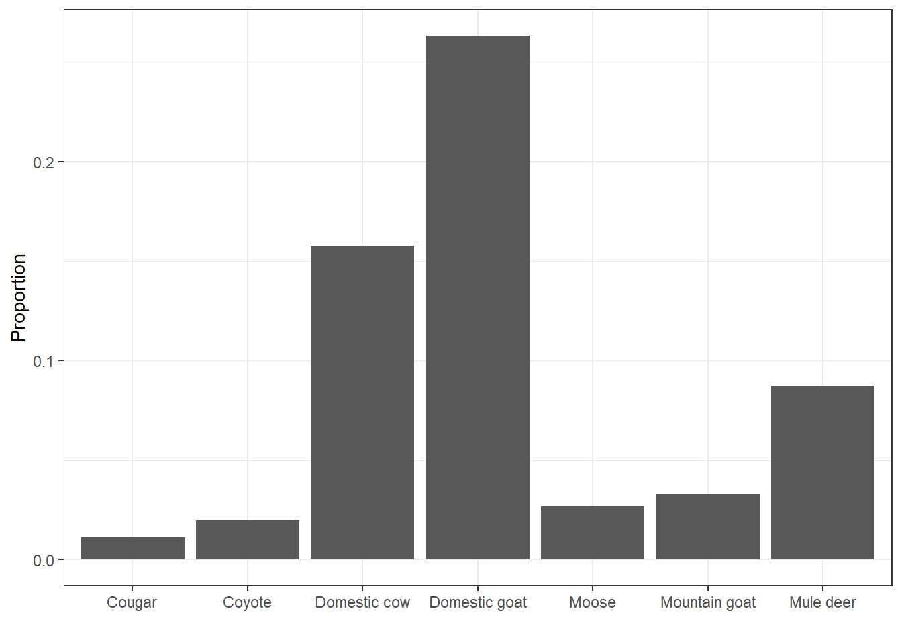
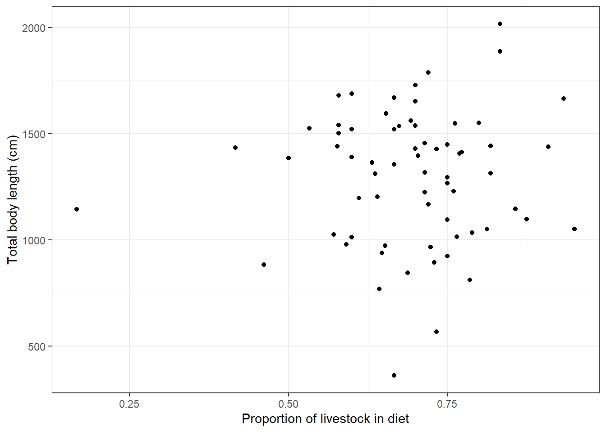

Chapter 4 Diet Composition of Adult Dragons in Utah
Dragons have been documented to prey on livestock in Utah, but so far no data existed to demonstrate whether dragons also prey on other animals and in what proportion. Here, we look at diet composition of adult dragons in Utah, and we explore the correlation between the proportion of livestock in the diet and the body size adult dragons reach.
diet %>%
left_join(dragons, by = "dragon_id") %>%
filter(age_class == "Adult") %>%
group_by(item) %>%
tally() %>%
mutate(prop = n/nrow(diet)) %>%
ggplot(aes(x = item, y = prop)) +
geom_bar(stat = "identity") +
labs(x = " ", y = "Proportion", fill = "Type") +
theme_bw()
While domestic goats are the main diet item found in dragon diet samples, followed by domestic cows, dragon diet also includes wild animals such as mule deer, mountain goat, moose, and (rarely) even coyote and cougar.
Let’s explore how livestock consumption relates with body measurements at maturity:
totals <- diet %>%
group_by(dragon_id) %>%
tally() %>%
rename(tot = n)
diet %>%
mutate(livestock = case_when(
item %in% c("Cougar", "Coyote", "Moose", "Mountain goat", "Mule deer") ~ FALSE,
TRUE ~ TRUE
)) %>%
group_by(dragon_id, livestock) %>%
tally() %>%
left_join(totals, by = "dragon_id") %>%
filter(livestock) %>%
mutate(prop_livestock = n/tot) %>%
left_join(dragons, by = "dragon_id") %>%
filter(age_class == "Adult") %>%
left_join(morphometrics, by = "dragon_id") %>%
ggplot(aes(x = prop_livestock, y = total_body_length_cm)) +
geom_point() +
labs(x = "Proportion of livestock in diet",
y = "Total body length (cm)") +
theme_bw()## Warning: Removed 48 rows containing missing values (geom_point).
It looks like high livestock consumption correlates with increased body size in adult dragons.